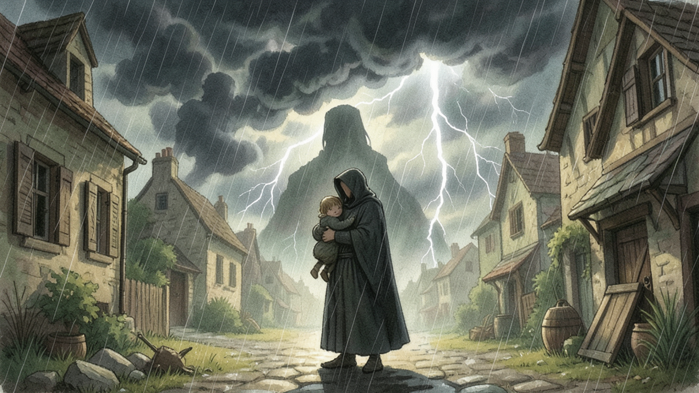

rq-lcy5 — Show what's here marks each thing at its chosen point
The name goes with the mark
Each mark moves to the point chosen in the studio, and the name sits beside it, as it does today beside the middle. The child has no point chosen, so it keeps the middle.

Dream voice
Shadows
Hooded man
Child
◎ Showing
Option A. Dream voice is marked up on the storm, Shadows on the head of the figure, Hooded man on his chest; each name sits beside its mark. Child unchanged.
Dream voice
Shadows
Hooded man
Child
◎ Showing
Today, for comparison. Every mark sits at the middle of its rectangle. The dream voice covers the whole picture, so its mark lands on the man's robe.
the mark a player seeswhere the mark is today (not shown in the game)the thing's rectangle (not shown in the game)
Option A — the mark goes to the nearest edge in view
When a thing's point is outside what an upright tablet or a narrow window shows, its mark goes to the nearest spot that is in view, at the same height, towards where the point is.
Dream voice
◎ Showing
Upright tablet, Option A. Dream voice's point (the lightning) is off the right edge, so the mark sits at the right edge, level with the storm.
Dream voice
◎ Showing
The whole picture, for reference: suppose the dream voice's point were set on the lightning at the right.
the mark a player seeswhere the mark is today (not shown in the game)the thing's rectangle (not shown in the game)